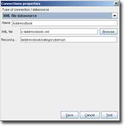
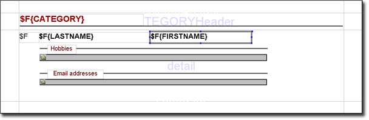
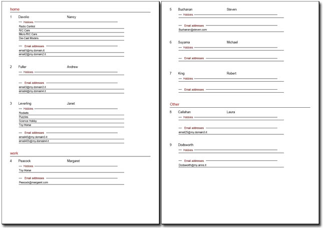

|
 |
<< Previous | Next >> | Table of Contents
7 Using the XML datasource
Starting from version 0.3.2, iReport provides an XML datasource that permit to fill a report reading data from an XML file.
iReport 0.4.0 use JRXmlDatasource shipped with JasperReports (from version 0.6.x)
This new implementation was developed by Peter Severin (developer of JasperAssistant).
This new implementation is much powerful supporting real XPath expressions. Here is what JasperReports documentation says about JRXmlDatasource.
|
net.sf.jasperreports.engine.data
Class JRXmlDataSource
java.lang.Object
|
+--net.sf.jasperreports.engine.data.JRXmlDataSource
- All Implemented Interfaces:
- JRDataSource, JRRewindableDataSource
- public class JRXmlDataSource
- extends java.lang.Object
- implements JRRewindableDataSource
XML data source implementation that allows to access the data from a xml
document using XPath expressions.
The data source is constructed around a node set (record set) selected
by an XPath expression from the xml document.
Each field can provide an additional XPath expresion that will be used to
select its value. This expression must be specified using the "fieldDescription"
element of the field. The expression is evaluated in the context of the current
node thus the expression should be relative to the current node.
To support subreports, sub data sources can be created. There are two different methods
for creating sub data sources. The first one allows to create a sub data source rooted
at the current node. The current node can be seen as a new document around which the
sub data source is created. The second method allows to create a sub data source that
is rooted at the same document that is used by the data source but uses a different
XPath select expression.
Example:
<A>
<B id="0">
<C>
<C>
</B>
<B id="1">
<C>
<C>
</B>
<D id="3">
<E>
<E>
</D>
</A>
Data source creation
- new JRXmlDataSource(document, "/A/B") - creates a data source with two nodes of type /A/B
- new JRXmlDataSource(document, "/A/D") - creates a data source with two nodes of type /A/D
Field selection
- @id - will select the "id" attribute from the current node
- C - will select the value of the first node of type C under the current node.
Sub data source creation
- "((net.sf.jasperreports.engine.data.JRXmlDataSource)$P{REPORT_DATA_SOURCE}).subDataSource("/B/C")
- in the context of the node B, creates a data source with elements of type /B/C
- "((net.sf.jasperreports.engine.data.JRXmlDataSource)$P{REPORT_DATA_SOURCE}).dataSource("/A/D")
- creates a data source with elements of type /A/D
Generally the full power of XPath expression is available. As an example, "/A/B[@id > 0"] will select all the
nodes of type /A/B having the id greater than 0.
For a short XPath tutorial check the following URL:
- Author:
- Peter Severin (peter_p_s@sourceforge.net, contact@jasperassistant.com)
|
This chapter cover the old iReport implementation of XML datasource. This can help to use the new one.
7.1 Configuring an XML datasource
The first step to use an XML file as a datasource is configure an XML Datasource. Select menu Datasource > Connections / Datasources, press New and select "XML file datasource" as connection type.
|  | | Fig.7.1: The XML datasource configuration panel. |
Fill the name field with the name of this datasource (i.e. Adressbook), select the XML file and set the record path.
7.2 The Record Path
An XML document is structured as a tree. JasperReports need data organized as a record set, so we must present a tree as set of record. The Record Path is a string that define the minimum path
required to define a record.
Example 1:
<palette>
<color>Red</color>
<color>Green</color>
<color>Blue</color>
</palette>
It this very simple case, the Record Path is the path from the root (tag palette) to the leaf (tag color): /palette/color
We use the same record path for this document (Example 2):
<palette>
<color>
<name>Red</name>
<red>255<red>
<green>0<green>
<blue>0<blue>
</color>
<color>
<name>Green</name>
<red>0<red>
<green>255<green>
<blue>0<blue>
</color>
<color>
<name>Blue</name>
<red>255<red>
<green>0<green>
<blue>0<blue>
</color>
</palette>
Please note that in this case the path don't ends with a leaf tag.
In general, the end tag is the first tag that has children of different type or is a leaf.
When the document become more complex, we can read prodoce a sub-datasource starting from a child.
In example 3 we can see that any color can have 0 or more aliases...
<palette>
<color>
<name>Red</name>
<alias type="html">#FF0000</alias>
<alias type="rgb">255, 0, 0</alias>
<alias type="CMYK">0, 99, 100, 0</alias>
</color>
<color>
<name>Green</name>
<alias type="html">#0000FF</alias>
<alias type="rgb">0, 0, 255</alias>
<alias type="lab">88, -79, 81</alias>
<alias type="CMYK">63, 0, 100, 0</alias>
</color>
<color>
<name>Blue</name>
<alias type="html">#0000FF</alias>
<alias type="rgb">0, 0, 255</alias>
</color>
</palette>
In this case we can think to tags alias as a set of records childs of master record /palette/color, the childs record will have as record path
the value /color/alias:
<color>
<alias type="html">#FF0000</alias>
<alias type="rgb">255, 0, 0</alias>
<alias type="CMYK">0, 99, 100, 0</alias>
</color>Note as this XML is very similar to example 1.
7.3 XML Datasource Syntax
To bind fields inside the XML, a syntax similar to XPath is used. The field path is stored in the field description (this because the field name don't support
a name like "/palette/color").
The path syntax is really simple. Is a recursive expression:
<base_path>[<symbol> <base_path>[<symbol><...>] ]
| <base_path> |
is the path from the root to the tag. If this path is longer than the Record Path, it's cuted to the Record Path. It is required for a field
definition. If it's alone, the value of the tag is returned.
Example: /palette/color |
| <symbol> |
is used to add an extra path to the base path and to define what should be returned.
+ add the following path to the base_path (this happen when the base_path = record path);
@ return the attribute value: it's followed by the attribute name;
* return all tags identified by the following path as a JRXMLDatasource
Examples:
/palette/color+name
/color/alias@type
/palette/color*alias
/addressbook/catogory/person+other_info+extra_time/hobbies*hobby
/addressbook@creation_date
|
7.4 Addressbook sample
This sample shows how to use the JRXMLDatasource using subreports.
The sample is composed by 4 files:
addressbook.xml is the data file
addressbook.jrxml is the master report file
hobby.jrxml is the hobby subreport
eamil.jrxml is the email subreport
addressbook.xml
<addressbook>
<category name="home">
<person id="1">
<LASTNAME>Davolio</LASTNAME>
<FIRSTNAME>Nancy</FIRSTNAME>
<hobbies>
<hobby>Radio Control</hobby>
<hobby>R/C Cars</hobby>
<hobby>Micro R/C Cars</hobby>
<hobby>Die-Cast Models</hobby>
</hobbies>
<email>email1@my.domain.it</email>
<email>email2@my.domain2.it</email>
</person>
<person id="2">
<LASTNAME>Fuller</LASTNAME>
<FIRSTNAME>Andrew</FIRSTNAME>
<email>email3@my.domain3.it</email>
<email>email4@my.domain4.it</email>
</person>
<person id="3">
<LASTNAME>Leverling</LASTNAME>
<FIRSTNAME>Janet</FIRSTNAME>
<hobbies>
<hobby>Rockets</hobby>
<hobby>Puzzles</hobby>
<hobby>Science Hobby</hobby>
<hobby>Toy Horse</hobby>
</hobbies>
<email>email45@my.domain3.it</email>
<email>email455@my.domain4.it</email>
</person>
</category>
<category name="work">
<person id="4">
<LASTNAME>Peacock</LASTNAME>
<FIRSTNAME>Margaret</FIRSTNAME>
<hobbies>
<hobby>Toy Horse</hobby>
</hobbies>
<email>Peacock@margaret.com</email>
</person>
<person id="5">
<LASTNAME>Buchanan</LASTNAME>
<FIRSTNAME>Steven</FIRSTNAME>
<hobbies>
</hobbies>
<email>Buchanan@steven.com</email>
</person>
<person id="6">
<LASTNAME>Suyama</LASTNAME>
<FIRSTNAME>Michael</FIRSTNAME>
</person>
<person id="7">
<LASTNAME>King</LASTNAME>
<FIRSTNAME>Robert</FIRSTNAME>
</person>
</category>
<category name="Other">
<person id="8">
<LASTNAME>Callahan</LASTNAME>
<FIRSTNAME>Laura</FIRSTNAME>
<email>email25@my.domain3.it</email>
</person>
<person id="9">
<LASTNAME>Dodsworth</LASTNAME>
<email>Dodsworth@my.anne.it</email>
</person>
</category>
</addressbook>
We have defined a datasource named Addressbook that use addressbook.xml as data file. The Record path is: /addressbook/category/person
Fields in the report are defined as follow:
| Field Name |
Field Description |
Type |
| CATEGORY |
/addressbook/category@name |
java.lang.String |
| PERSON_ID |
/addressbook/category/person@id |
java.lang.String |
| LASTNAME |
/addressbook/category/person+LASTNAME |
java.lang.String |
| FIRSTNAME |
/addressbook/category/person+FIRSTNAME |
java.lang.String |
| HOBBIES |
/addressbook/category/person+hobbies*hobby |
java.lang.Object (castable to JRDataSource) |
| EMAIL_ADDRESSES |
/addressbook/category/person*email |
java.lang.Object (castable to JRDataSource) |
To the master report (figure 7.2) we have added a group named CATEGORY that has as expression the category name.
|  | | Fig.7.2: The master report. |
We have two subreport too, one for hobbies of a person and one for email addresses.
The first subreport element has $F{HOBBIES} as connection expression (of type datasource expression) and as subreport expression "/hobby.jasper" of type String.
The second subreport element has $F{EMAIL_ADDRESSES} as connection expression (of type datasource expression) and as subreport expression "/email.jasper" of type String.
In hobby.jasper we have defined only one field:
| Field Name |
Field Description |
Type |
| HOBBY |
/hobbies/hobby |
java.lang.String |
The same in email.jasper:
| Field Name |
Field Description |
Type |
| EMAIL |
/person/email |
java.lang.String |
Note as every field in subreport are defined specifing as root element in the path the parent element:
HOBBY -> /hobbies/hobby
EMAIL -> /person/email
This is the result:
|  | | Fig.7.2: The final result. |
Finally we show how to use the JRXMLDataDource in a program:
1 package it.businesslogic.ireport.examples;
2
3 import it.businesslogic.ireport.connection.JRXMLDataSource;
4 import dori.jasper.engine.export.JRPdfExporter;
5
6 import dori.jasper.engine.*;
7 import java.util.HashMap;
8
9
10 public class XMLDataSourceExample {
11
12 public static void main(String[] args) throws Exception {
13
14 String reportFileName = "/addressbook.jasper";
15 String outFileName = "/addressbook.pdf";
16 String xmlFileName = "/addressbook.xml";
17 String recordPath = "/addressbook/category/person";
18
19 JRXMLDataSource jrxmlds = new JRXMLDataSource(xmlFileName,recordPath);
20
21 HashMap hm = new HashMap();
22
23 try
24 {
25 JasperPrint print = JasperFillManager.fillReport(
26 reportFileName,
27 hm,
28 jrxmlds);
29
30 JRExporter exporter = new dori.jasper.engine.export.JRPdfExporter();
31
32 exporter.setParameter(JRExporterParameter.OUTPUT_FILE_NAME,outFileName);
33 exporter.setParameter(JRExporterParameter.JASPER_PRINT,print);
34
35 exporter.exportReport();
36 System.out.println("Created file: " + outFileName);
37 }
38 catch (JRException e)
39 {
40 e.printStackTrace();
41 System.exit(1);
42 }
43 catch (Exception e)
44 {
45 e.printStackTrace();
46 System.exit(1);
47 }
48
49 }
50
51 }
7.5 XML Datasource license
JRXMLDatasource is not released under GPL license (as iReport is) but under LGPL as jasperreports: in this way you can use the JRXMLDataSource
in your program without problems.
However, if you use it, please make a simbolic donation to the iReport project.
|
|
|
{kind=link}
{kind=link}
{kind=link}